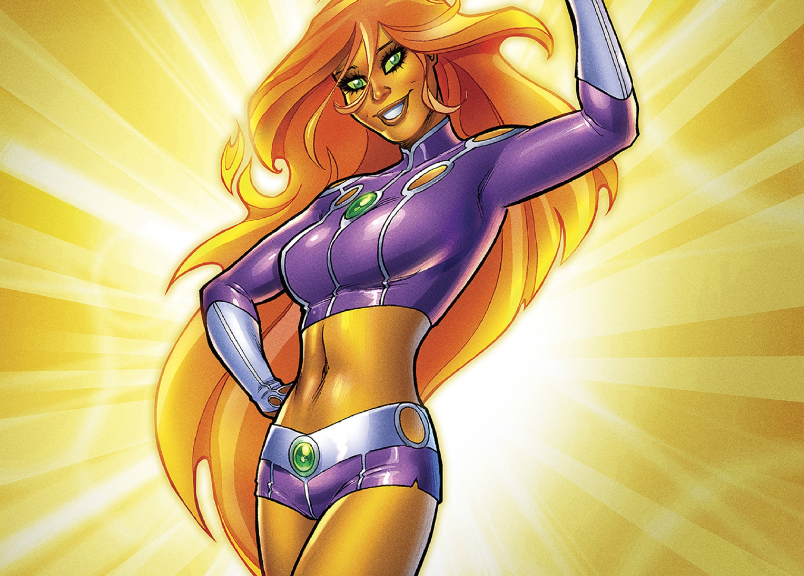

batman
Bruce Wayne es el único personaje que se identifica como Batman y aparece en Batman, Detective Comics, Batman y Robin, y Batman: The Dark Knight. Dick Grayson vuelve al manto de Nightwing

harley quinn
La creación de Harley Quinn fue una idea de último minuto propuesta por el escritor estadounidense Paul Dini para modificar una escena del vigésimo-segundo episodio de Batman: la serie animada

starfire
Starfire ha recorrido un largo camino desde su concepción inicial como "Sonja Roja d el espacio". Esta exuberante princesa extraterrestre viajó a la Tierra y se convirtió en un gran miembro de Teen Titans.